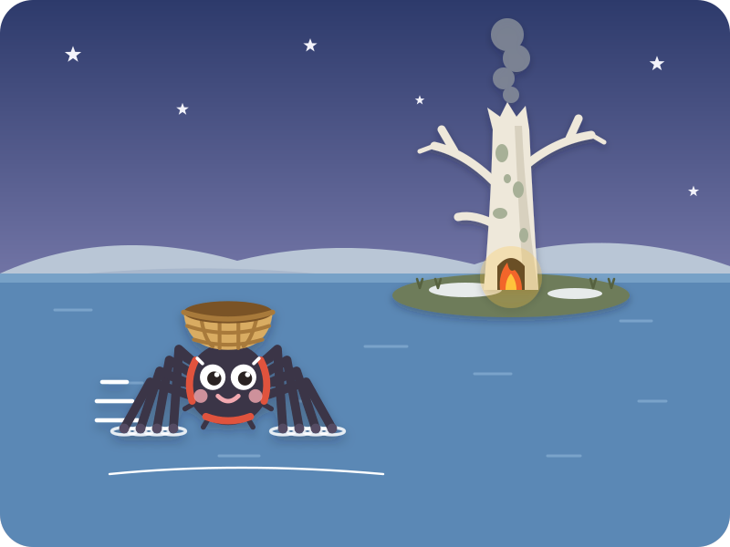
A Cherokee story from North America
Water Spider Brings the Fire
"Story, story — are your ears open?" Kai: "Open!"
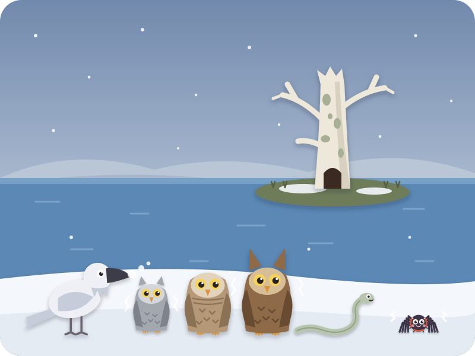
Long, long ago, there was no fire anywhere. The world was cold, cold, cold.
All the animals shivered. "Brrr!" Kai shivers
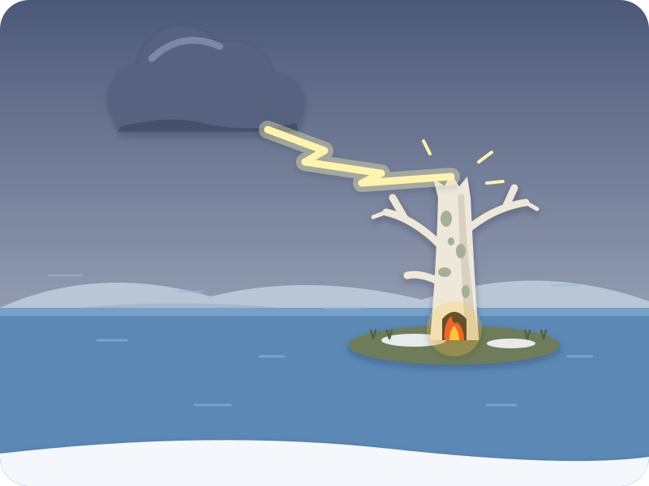
Then the Thunders, way up high, sent down their lightning — CRACK! Kai claps
It struck a hollow sycamore tree on an island, and deep down at the bottom of the tree, a fire began to burn.
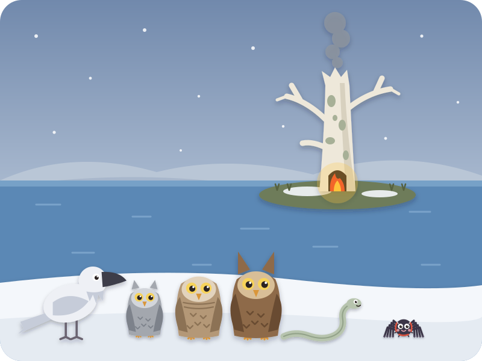
The animals could see smoke curling out of the top of the tree. But the island was far away, across the water.
So they all met together and asked, "Who will bring the fire?" Kai asks it too
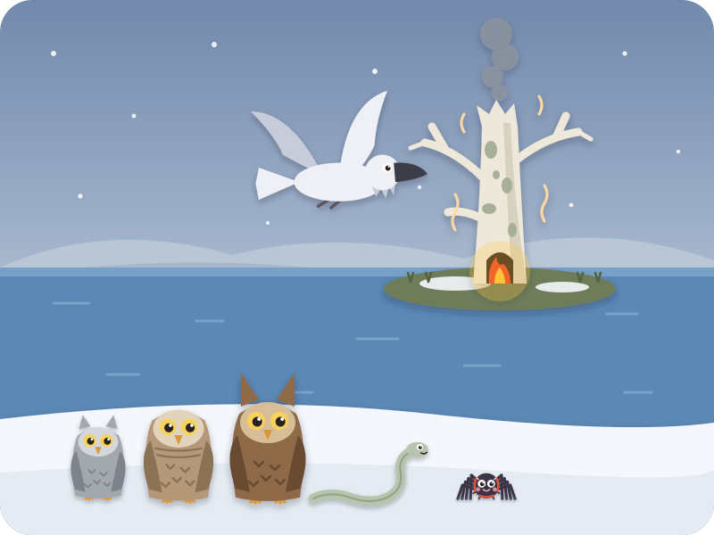
"I will!" said Raven. "I'm big and strong!"
Off he flew across the water — flap, flap, flap Kai flaps — to the tree. But oh, the fire was hot!
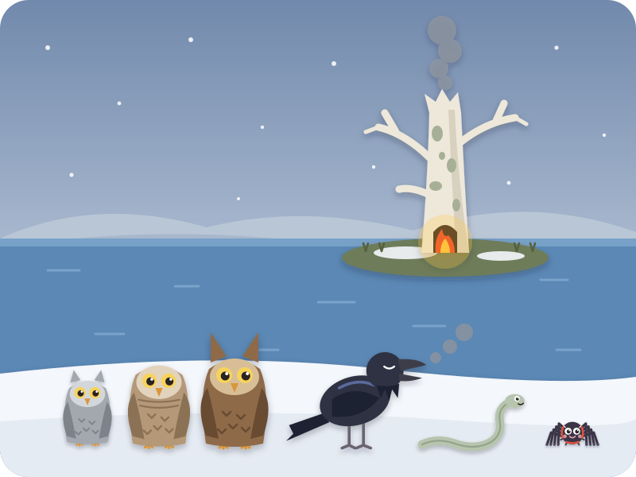
Raven came home with no fire at all — a bit smoky, and coughing. "Cough, cough!" Kai coughs
And his feathers had turned dark. That's why Raven is black, all the way to today.
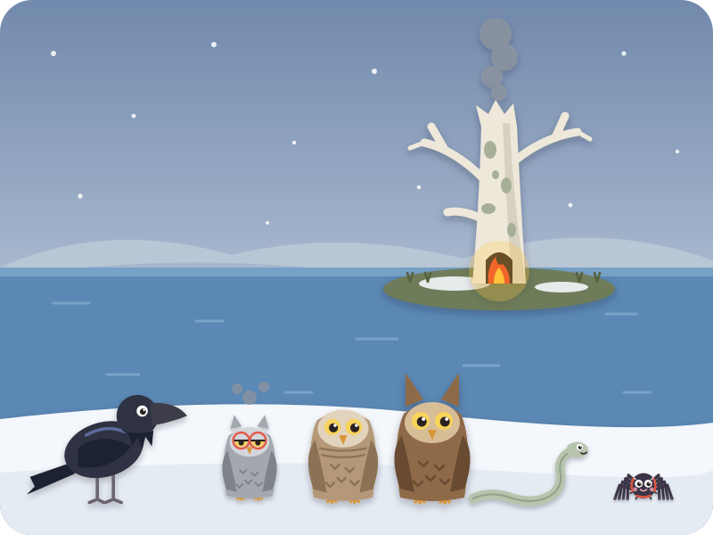
"Who will bring the fire?" Kai "I will!" said little Screech Owl.
He peeked into the tree — but a puff of hot smoke blew in his eyes. Home he came, blinking, and his eyes are a bit red to this day.
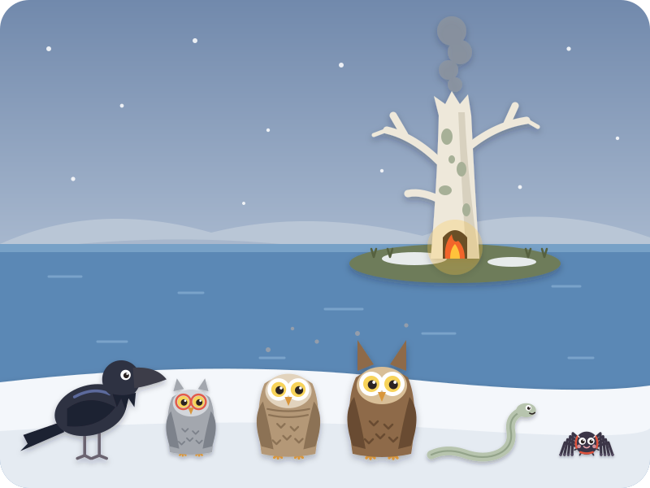
"Who will bring the fire?" Kai "We will!" said Hooting Owl and Horned Owl.
But the smoke made them cough, and the wind blew ashes all around their eyes. They came home with white rings round their eyes — and they still have them.
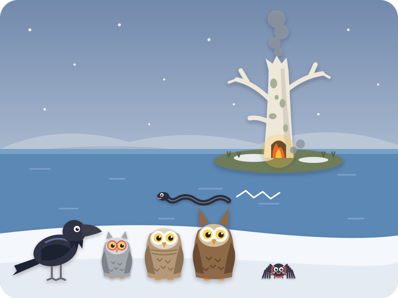
"Who will bring the fire?" Kai "I will!" said Racer the snake.
He swam to the island, slid into a little hole at the bottom of the tree — and out he zipped, zig, zag! Kai's hand zig-zags He came home dark all over, and racer snakes are black to this day.
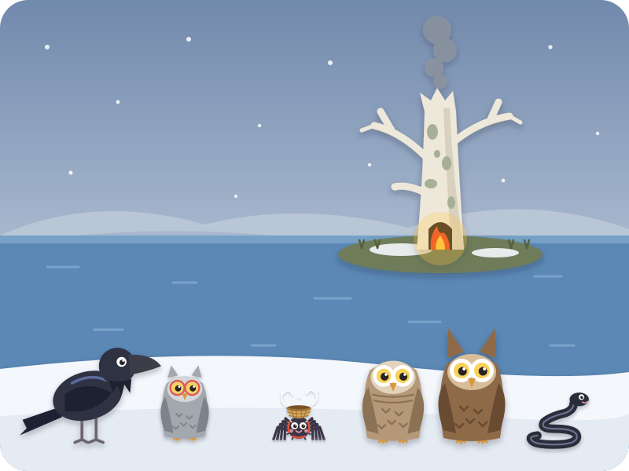
Everyone was still cold. "Who will bring the fire?" Kai And a tiny voice said, "I will!"
It was little Water Spider. "But how will you carry it?" "I'll manage!" She spun a thread, wove a little bowl, and put it on her back.
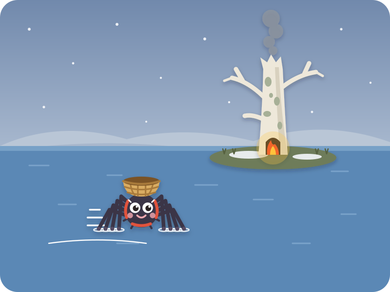
Water Spider can run right on top of the water. So off she went —
"Skate, skate, skate across the water!" Kai skates his fingers — all the way to the island, and through the grass to the tree.
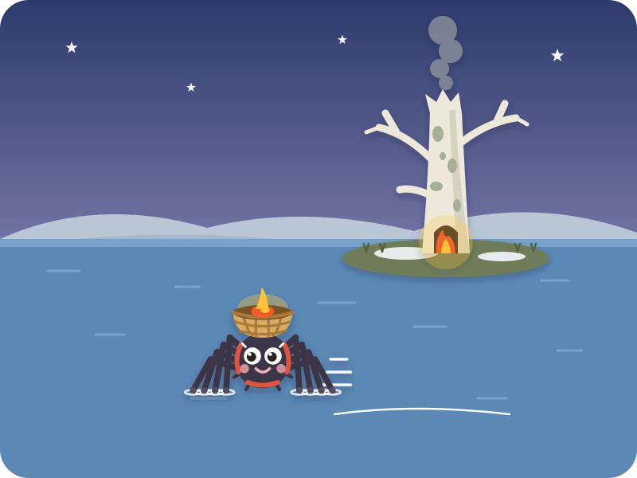
Into her bowl she put one little glowing ember. Just one.
And back she came: "Skate, skate, skate across the water!" Kai skates
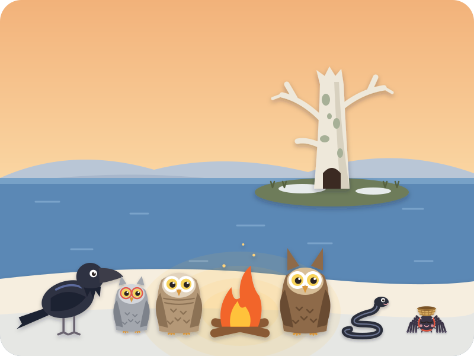
From that one little ember, everyone made a big warm fire. "Ahhh — warm!" Kai warms his hands
And ever since, we have had fire — and Water Spider still keeps her little bowl.
The End
"Snip, snap, snout — this tale's told out."
Swipe back to read it again
Driving? Tell it without the page · six beats
The picture book is for home, bedtime, or a passenger. In the car, tell it from memory — bold is Kai's part.
- Long ago there was no fire, and the world was cold, cold, cold — "Brrr!"
- The Thunders sent lightning — CRACK! — into a hollow sycamore tree on an island, and fire began to burn inside it. The animals asked, "Who will bring the fire?"
- Raven said "I will!", flew over, and came home smoky — "Cough, cough!" — with his feathers turned black.
- "Who will bring the fire?" Screech Owl came back with red eyes, Hooting Owl and Horned Owl with white rings round their eyes, and Racer the snake all black.
- Tiny Water Spider said "I will!", wove a little bowl for her back, and went "Skate, skate, skate across the water!"
- She brought back one little ember — "Skate, skate, skate!" — everyone made a big warm fire, and she still keeps her bowl.
After the story · car-friendly wondering
"Why could little Water Spider do it when the big birds couldn't?"
"If you made a little bowl to carry something special, what would you carry?"
"Fire keeps us warm, but it's very hot. Who's allowed to look after the fire at our house?"
Where this story comes from
This is a Cherokee story. The written version we followed is "The First Fire" in James Mooney's Myths of the Cherokee, published in 1900 in the Nineteenth Annual Report of the Bureau of American Ethnology. Mooney was an outsider, a government ethnologist and not a Cherokee, who wrote down stories from Cherokee storytellers in western North Carolina in the late 1800s. Mooney's notes say he got this story from two Cherokee storytellers, Swimmer (A'yûñ'inĭ) and John Ax (Itagû'nûhĭ). In his version the world is cold until the Thunders send their lightning to put fire into the bottom of a hollow sycamore tree on an island. The Raven goes first, and the heat scorches his feathers black. The little Screech Owl's eyes are nearly burned and stay red. The Hooting Owl and the Horned Owl come back with white rings of ash round their eyes. The black racer snake crawls in through a hole at the bottom of the tree and comes out scorched black. Then the Water Spider, who can run on top of the water, spins a thread, weaves a tusti bowl, fastens it on her back, and carries back one little coal. Mooney ends, "and the Water Spider still keeps her tusti bowl." He also says she is not the mosquito-like water spider but another kind, "with black downy hair and red stripes on her body", which is how we drew her.
This retelling is our own, for a 4-year-old. The animals come home "a bit smoky, coughing" instead of being scorched or nearly blinded. To keep it short we left out the great blacksnake, "the Climber", who tries after the racer. Raven's pale colour before the fire, the snowy shore and the campfire at the end are our picture-book choices, not details from Mooney. Mooney's text has no refrain; the repeated "Who will bring the fire?" and the other join-in lines are there for Kai to shout along. It's a natural line for this story, so other retellings may use similar words.
For the story as Cherokee people tell it, look for The First Fire: A Cherokee Story (2020), a children's book by Brad Wagnon, a Cherokee Nation citizen who taught Cherokee language and culture in Tahlequah, Oklahoma. Cherokee storyteller Whitney Roach also tells the Water Spider story in an episode of the series Osiyo, Voices of the Cherokee People. We haven't compared those versions with ours, and Cherokee tellings may differ from Mooney's.